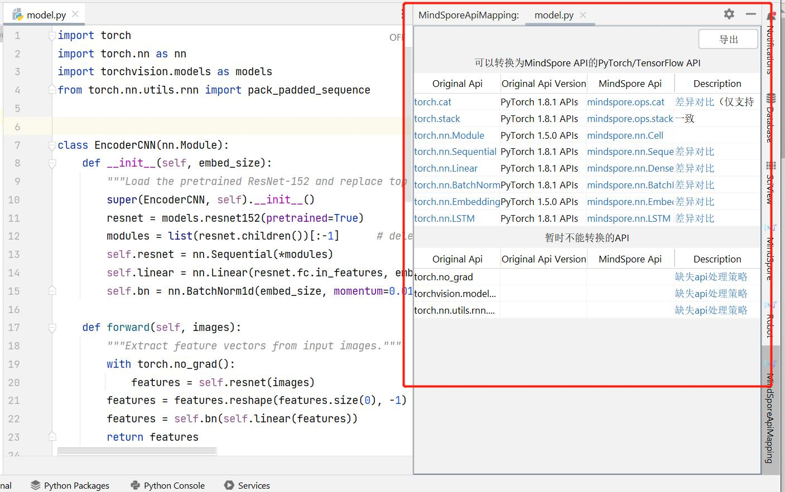
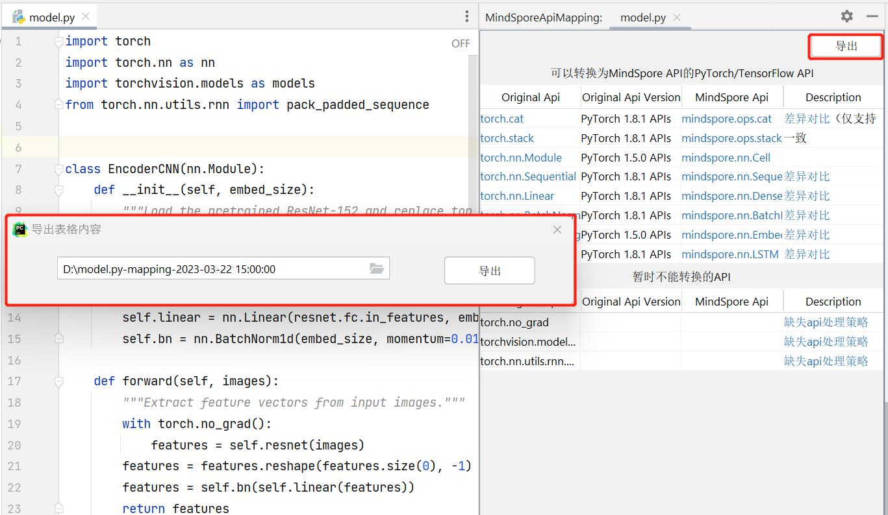
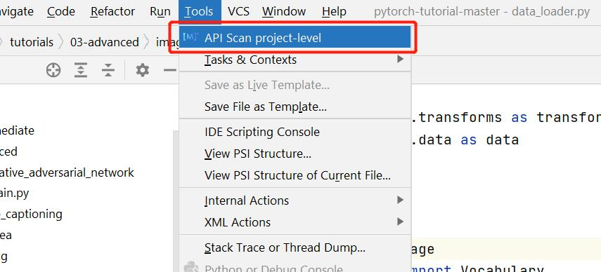
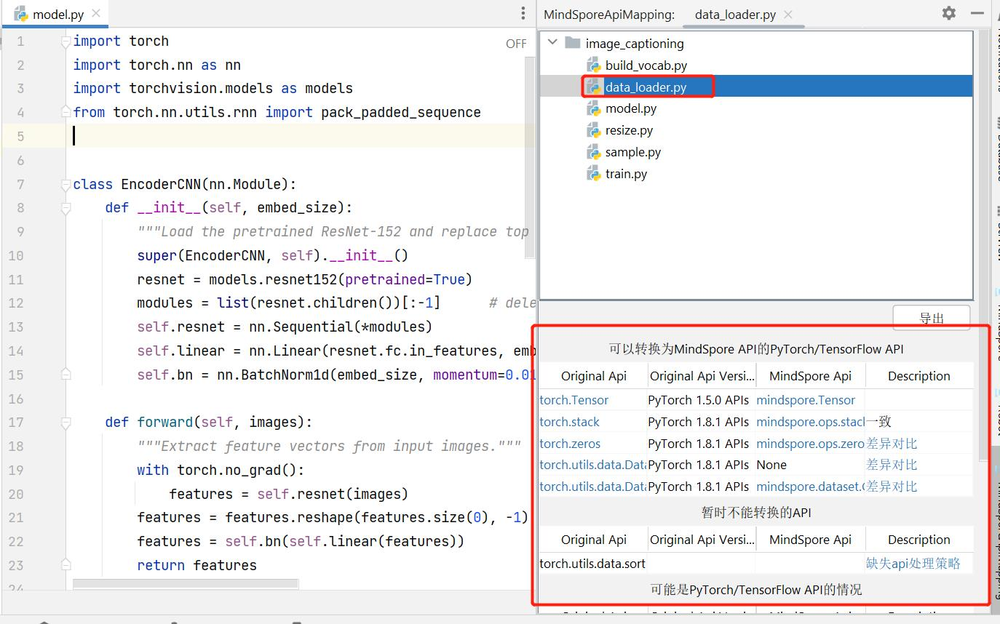
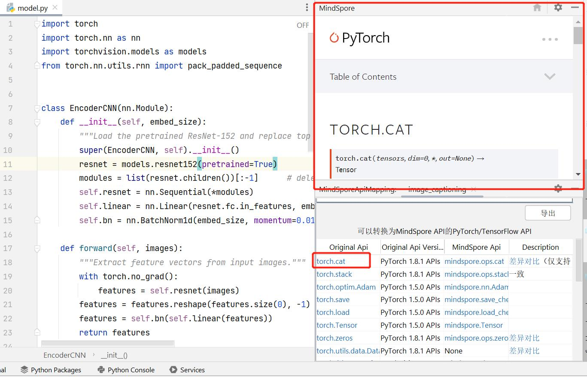
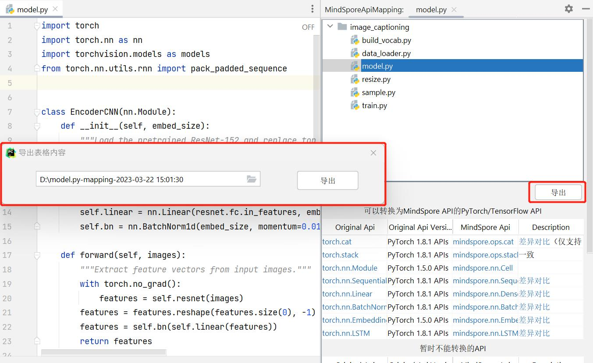

算子扫描¶

功能介绍¶
快速扫描代码中出现的API，在侧边栏直接展示API详情。
为方便其他机器学习框架用户，通过扫描代码中出现的主流框架API，联想匹配对应MindSpore API。
使用步骤¶
文件级别算子扫描¶
在当前文件任意位置处右键，打开菜单，点击菜单最上方的”operator scan”。

右边栏会自动弹出，展示扫描出的算子，并展示包含名称，网址等信息的详细列表。若本文件中未扫描到算子，则不会弹出窗口。

蓝色字体的部分均可以点击，会自动在上方再打开一栏，展示网页。

点击右上角”导出”按钮，可将内容导出到csv表格。

项目级别算子扫描¶
在当前文件任意位置处右键，打开菜单，点击菜单上方第二个”operator scan project-level”，或在上方工具栏选择”Tools”，再选择”operator scan project-level”。


右边栏会弹出整个项目中扫描出的算子，并展示包含名称，网址等信息的详细列表。

在上方框中可以选择单个文件，下方框中将单独展示此文件中的算子，文件选择可以随意切换。


蓝色字体部分均可以点击，会自动在上方再打开一栏，展示网页。

点击”导出“按钮，可将内容导出到csv表格。
